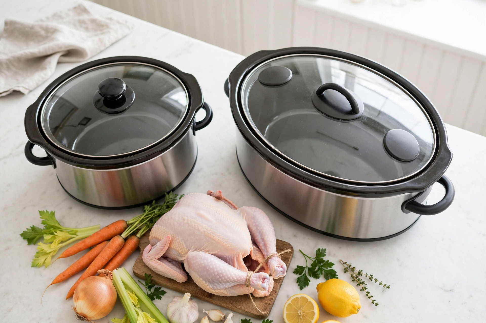

Slow cooker sizes and shapes: oval vs round, quarts to households

Every slow cooker mistake that looks like a recipe failure — watery stew, scorched edges, a roast that will not fit under the lid — is usually a sizing decision made months earlier. Yet the sizing advice is a mess: one chart says a 6-quart cooker serves four to six people, another says five to six, and the manufacturer of a popular 6-quart model says seven or more. This guide explains why those numbers differ, anchors the size table to manufacturer ratings, does the usable-volume math that quart labels hide, and settles oval versus round the only way it can be settled: by what actually goes into the pot.
Quarts are brim capacity, not dinner capacity
A cooker's stated size is the volume of its insert filled to the brim — a condition it should never cook in. Two fill rules govern real use, and they come from different places, which is why guides quote them inconsistently. Clemson Extension's summary of USDA slow cooker guidance sets the safety range: fill the cooker no less than half full and no more than two-thirds full — too little food heats too fast and unevenly, too much can cook slowly enough to linger in unsafe temperatures and can spill as it simmers. Crock-Pot owner's guides, cited in review roundups, allow a touch more: fill the stoneware between half and three-quarters full. Hamilton Beach's guidance is at least half full and no closer than an inch to the rim. The conservative, safety-anchored working range is half to two-thirds, and the math that follows uses it.
That range quietly rewrites every label. A 6-quart cooker cooks best with about 3 to 4 quarts of food in it. A 4-quart cooker is really a 2-to-2.7-quart dinner pot. A household that regularly cooks 5 quarts of chili does not need a 6-quart cooker — it needs a 7- or 8-quart cooker, because 5 quarts of food in a 6-quart insert is over the two-thirds line before the lid goes on. Size for the food volume, not the label volume, and half the sizing confusion disappears.
The size table, anchored to manufacturer ratings
Serving counts differ between charts because "a serving" is not a unit — it depends on whether the pot holds a main course, a side, or a batch meant for leftovers. The table below puts the general charts next to the one hard anchor available: Hamilton Beach's own ratings for its cookers, including its 6-quart programmable model, which the manufacturer says serves 7 or more people and holds a 6 lb chicken, a 4 lb roast, or enough barbecue for up to 25 sliders. Treat the manufacturer's figure as a generous ceiling and the general charts as the everyday expectation.
| Label size | Usable food volume (half to two-thirds) | Household fit (general charts) | Manufacturer anchor / what fits |
|---|---|---|---|
| 1.5–2 qt | About 0.75–1.3 qt | 1–2 people; dips, sauces, oatmeal | Hamilton Beach rates 2 qt at 1–2 people |
| 3–4 qt | About 1.5–2.7 qt | 2–4 people; small stews, chili for two, chicken thighs | Hamilton Beach rates 4 qt at 4+ people |
| 5 qt | About 2.5–3.3 qt | 4–5 people; 3–4 lb roasts | Hamilton Beach rates 5 qt at 5 people |
| 6 qt | About 3–4 qt | 4–6 people; whole chicken, 4–5 lb roast, batch cooking | Hamilton Beach rates 6 qt at 7+ people; holds a 6 lb chicken or 4 lb roast |
| 7 qt | About 3.5–4.7 qt | 6–8 people; large roasts, big soups | Hamilton Beach rates 7 qt at 8+ people; OvenSpot lists a 5 lb roast or 7 lb chicken |
| 8–10 qt | About 4–6.7 qt | 8–10+ people; crowds, bulk meal prep | Hamilton Beach rates 8 qt at 10+ people |
One more anchor matters for recipe readers: KitchPrep's size guide notes that when a cookbook or recipe lists a slow cooker with no size at all, it nearly always targets a 5- or 6-quart insert. That is the strongest argument for the 6-quart class as the default buy — the recipe world is written for it. Cuisine at Home's test kitchen puts it similarly: most slow cookers fall in the 4- to 6-quart range, which is a good size for families, while the 1.5- to 2.5-quart range suits appetizers and cooking for two.
Oval vs round: shape is about the cut, not the soup
For anything liquid — soups, stews, beans, chili — shape barely matters, and both shapes perform. KitchPrep's summary is the standard one: round inserts suit soups, beans, and smaller roasts, while oval inserts cradle a whole chicken or a long chuck roast. Cuisine at Home adds the cuts that decide it: cookers of 3 quarts or larger come in round or oval, and the oval shape allows more flexibility for fitting larger cuts such as ribs, brisket, or even salmon. Small cookers, around 1.5 quarts, are usually round only.
The fit guide makes the shape decision concrete. A whole chicken of 3 to 4 lb wants a 5- to 6-quart oval; a pork shoulder of 4 to 6 lb wants a 6- to 8-quart oval; a beef chuck roast of 3 to 4 lb fits a 5- to 6-quart oval. In a round cooker of the same label size, a long roast often has to be cut in two or curled — workable, but it changes the cook and the presentation. The trade-offs run the other way for storage and footprint: a typical 6-quart oval is about 15 to 16 inches long, 10 to 11 inches wide, and 10 to 11 inches tall, weighing 10 to 14 pounds — a serious cupboard commitment, and a reason round cookers remain popular in small kitchens. Oval for households that cook whole birds and long roasts; round for soup-and-stew households short on shelf space. Neither is wrong; cooking the wrong menu in either is.
A decision framework by household
One or two people, fresh dinners, modest leftovers: a 3- to 4-quart cooker. It sits in the fill range with a two-person stew, where the same stew in a 6-quart pot would spread thin, heat too fast, and scorch at the edges — a review roundup of manufacturer guidance notes that a crock only half full cooks faster, so doneness needs checking early, and below half it gets worse. Add a 1.5- to 2-quart mini only if dips and hot appetizers are a real habit.
Three to five people, or anyone who batch-cooks: a 6-quart oval. It matches the recipe world's default size, takes a whole chicken or a 4 lb roast by the manufacturer's own rating, and its 3-to-4-quart usable volume covers family chili and freezer batches without breaking the fill rule.
Six or more people, big cuts, or serious meal prep: 7 to 8 quarts. Bone broth wants 7 to 8 quarts for headroom, party meatballs of 3 to 5 lb want 7 to 8, and a 10-quart model — rated by OvenSpot's chart at 9 or more servings, up to a 10 lb turkey or 12 lb roast — is a crowd appliance, not a weeknight one: most family dinners would under-fill it badly.
The two-cooker answer: households that both cook weeknight dinners for two and host holidays often do better with a 3- to 4-quart everyday cooker plus a 6- to 8-quart batch cooker than with one compromise size that under-fills on Tuesdays and over-fills at Thanksgiving. The fill rule, not the guest list alone, should make that call.
The sizing procedure
This is a decision guide rather than a repair how-to, so instead of a fix procedure it offers a sizing procedure — the steps to run before buying, using the largest meal actually planned rather than an imagined one.
- Name the largest regular meal: the biggest thing cooked at least monthly — a whole chicken, a shoulder, a double batch of soup — with its weight or volume.
- Convert it to food volume and pick the label size whose half-to-two-thirds window contains it: 4 quarts of food needs a 6- to 8-quart label, not a 4-quart one.
- Check the shape against the cut: whole birds, racks of ribs, brisket, or long roasts point to oval; soups, beans, and stews leave the choice open.
- Check the manufacturer's fit rating, not just the chart: for example, Hamilton Beach rates its 6-quart at a 6 lb chicken or 4 lb roast — compare that rating with the planned cut's weight.
- Measure the storage spot against a typical 6-quart oval footprint of about 15–16 by 10–11 inches before committing to the large sizes.
- Confirm the smallest regular meal still fills it halfway. If the Tuesday dinner cannot reach the halfway line of the holiday cooker, that is the two-cooker case above, not a reason to under-fill.
What success looks like: the chosen cooker's usable window — half to two-thirds of its label size — contains both the smallest weekly dinner and the largest monthly batch, the signature whole cut fits without cutting or forcing the lid, and the insert has a measured home in the kitchen. A cooker that passes all three checks will make its recipes look well-written.
FAQ
Can a big cooker handle small recipes if the dial is watched? Only within limits. Below half full, food heats faster and can overcook or scorch, and manufacturer guidance to check doneness early assumes the pot is at least half full. Halving a recipe for a much smaller cooker is the reliable route; hoping a large, nearly empty crock behaves is not.
Does shape change cooking temperature? No — size and shape change fit and fill behaviour, not the settings. Slow cookers cook between 170°F and 280°F according to the USDA, whatever the insert's shape.
What temperature should food be held at for serving? Per the fit and safety guidance gathered here: keep finished food at or above 140°F during service — Clemson Extension specifies heating food to steaming, 165°F or above, before placing it in a preheated cooker at 140°F or above — and reheat leftovers to 165°F.
Label size minus the fill rule, shape matched to the cut, servings checked against the manufacturer's own rating: size a slow cooker on those three numbers and the recipes take care of themselves.